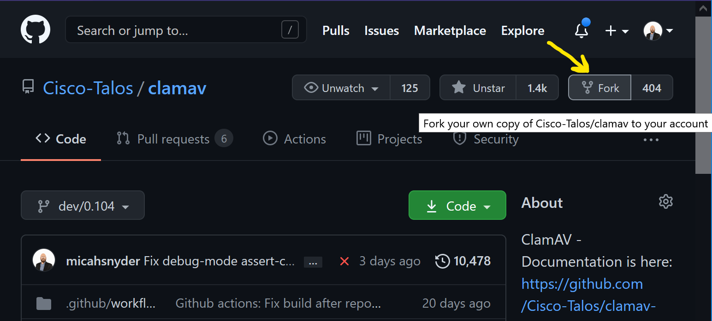
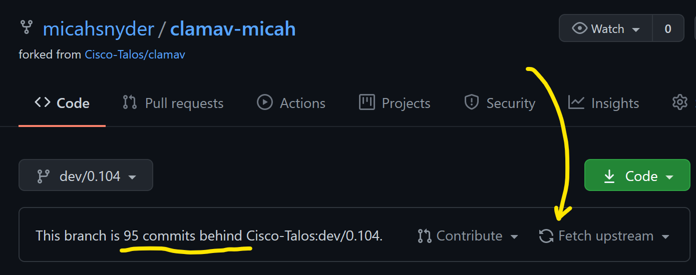
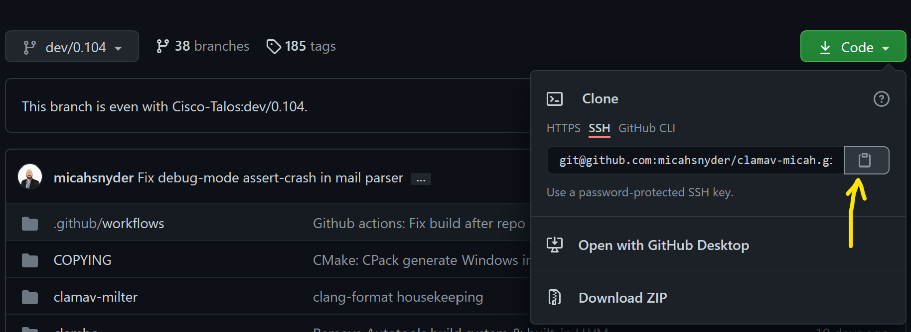

Working with a Your Own Fork of the ClamAV repository
A "fork" on GitHub is a personal playground. Though the word "fork" in the concept of open source traditionally referred to creating (and maintaining) a new variant of a project, forks on GitHub/GitLab/BitBucket/etc these days typically refer to a personal copy of the project where a user can test modifications to fix a bug or add a feature before contributing it back to the project in the form of a "pull request".
Create and Maintain a Personal Fork
You may only have one for any project, but it is very easy to create:

You can rename it as needed so you won't confused a clone of your fork with that of the upstream clamav repository. Go to the "Settings" page and change the name to add your name in a suffix:

You're free to add or delete branches in your fork as you see fit, but I would advise against adding your own commits to the existing branches. The existing branches, particularly the main branch, are a reference from which you can create your own branches for your work. Adding your own commits to the existing branches will break your ability to synchronize with the upstream Cisco-Talos/clamav repository, and without more advanced Git experience you won't be able to correct it.
Tip: If you've managed to screw up the commit history in your fork to the point where you don't know how to fix it, you can always delete your fork and create a new one.
Your fork is a snapshot of the upstream clamav repository at the moment at which you created it. Left unmaintained, your fork's default branch will get left behind. Unlike BitBucket, GitHub will not sync branches for you automatically. If your branch is behind, it is simple to sync the branch on your fork using GitHub's GUI by pressing the "Fetch Upstream" button:

You can sync other branches too. Simply switch branches to the desired branch and press "Fetch Upstream" again.
Working with a Clone of your Fork on the Command Line
If you don't already have an SSH key for your GitHub account, I recommend creating one. Navigate to your Account Settings and under SSH and GPG keys, click the "New SSH key" button. If you're unfamiliar with how to generate an SSH key, there's a nearby link "generating SSH keys" with additional instructions.
Next, clone your ClamAV fork. Use the "Code" button on the default page for your fork to copy the "SSH" URL. If you don't want to use an SSH key for GitHub authentication, use the HTTPS URL instead:

Now open up a terminal and type:
git clone <paste that Git URL>
cd clamav-YourNameHere
Create a branch off of the default branch where you will work. If working on a GitHub Issue, or JIRA task*, the following branch name prefixes will help you and others identify the branch:
- For GitHub issues:
issue-####-short-description - For JIRA task:
CLAM-####-short-description
Note:
*The ClamAV JIRA task tracker is not accessible outside of the Cisco network.
Create your working branch:
git checkout -b issue-####-short-description
You're now ready to make edits to the source. Be sure your changes match our code format style. The easiest way is to install clang-format and enable "Format On Save" in your text editor.
When you have made your changes, run:
git add -u
git commit
Leave a meaningful git commit message that has a high-level descriptive title, and a more technical message body describing why the change was needed what your commit does to resolve it.
Run this to upload your commit to your fork on GitHub:
git push -u origin <the_name_of_your_branch>
The -u origin argument will enable tracking between your local branch and your remote branch. In the future you will only need to do git push and it will know where to push it.
Rebase your development branch with the upstream main branch and resolving merge conflicts
If you don't already have it:
git remote add upstream git@github.com:Cisco-Talos/clamav.git
Then run:
git fetch upstream
git rebase upstream/main
If you have any merge conflicts, you'll now have the opportunity to fix them. After every conflict is resolved and you've saved the files in question, run git add <the resolved files> and then run git rebase --continue.